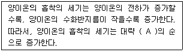
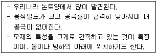
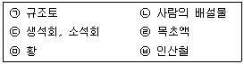

유기농업기사 (2015-08-16 기출문제)
1과목: 재배원론
1. 종자의 발아와 휴면에 대하여 올바르게 기술한 것은?
- 벼는 종자무게의 5%의 수분을 흡수하여야 발아한다.
- 환경이 불리하여 발아하지 않는 것을 자발적 휴면이라 한다.
- 수발아가 잘되는 품종은 휴면성이 약하다.
- 수중에서 발아가 감퇴하지 않는 종자는 귀리, 밀, 콩 등이다.
(정답률: 70%)

2. 다음 중 변온에 대한 설명으로 옳은 것은?
- 가을에 결실하는 작물은 대체로 변온에 의해서 결실이 억제된다.
- 동화물질의 축적은 어느 정도 변온이 큰 조건에서 많이 이루어진다.
- 모든 종자는 변온조건에서 발아가 촉진된다.
- 일반적으로 작물의 생장에는 변온이 큰 것이 유리하다.
(정답률: 72%)
3. 세포분열을 촉진하는 물질로서 잎의 생장촉진, 호흡억제, 엽록소와 단백질의 분해억제, 노화방지 및 저장 중의 신선도 증진 등의 효과가 있는 물질은?
- ABA
- auxin
- cytokinin
- NAA
(정답률: 81%)
4. 식물 생장조절제 에틸렌의 농업적 이용이 아닌 것은?
- 옥수수, 당근, 양파 등 작물 생육억제 효과가 있다.
- 오이, 호박 등에서 암꽃의 착생수를 증대시킨다.
- 사과, 자두 등의 과수에서 적과의 효과가 있다.
- 양상추, 땅콩 종자의 휴면을 연장하여 발아를 억제한다.
(정답률: 49%)
5. 환경에 의한 변이는 유전하지 않으나 원인불명이지만 유전하는 변이도 있는데, 이것을 돌연변이라 한다. 이 학설을 주창한 사람은?
- De Vries
- Mendel
- Johannsen
- Darwin
(정답률: 79%)
6. 식물체 내의 수분포텐셜을 올바르게 설명한 것은?
- 삼투포텐셜, 압력포텐셜, 메트릭포텐셜, 토양수분보류력으로 구성된다.
- 매트릭포텐셜과 압력포텐셜이 같으면 팽만상태가 된다.
- 수분포텐셜과 삼투포텐셜이 같으면 팽만상태가 된다.
- 삼투포텐셜과 압력포텐셜이 같으면 팽만상태가 된다.
(정답률: 63%)
7. 식물체의 붕소 결핍 증상이 아닌 것은?
- 분열조직이 괴사한다.
- 식물의 키가 커져서 도복하기 쉽다.
- 사탕무의 속썩음병이 발생한다.
- 알팔파의 황색병이 발생한다.
(정답률: 75%)
8. 다음 중 하고현상을 일으키지 않는 목초는?
- 알팔파
- 브롬그라스
- 수단그라스
- 스위트클로버
(정답률: 59%)
9. 우리나라 밭 토양의 양이온치환용량은 10.5이고, k+은 0.4, Ca+2은 3.5, Mg+2은 1.4me/100이었다. 우리나라 밭 토양의 평균 염기포화도는?
- 5.7%
- 15.8%
- 50.5%
- 53.0%
(정답률: 60%)
10. 다음 중 토양반응의 미산성에 해당하는 pH 범위는?
- 4.9~5.2
- 5.3~5.8
- 6.1~6.5
- 6.8~7.5
(정답률: 49%)
11. 밀 게놈 조성 중 ABD에 속하는 것으로만 이루어진 것은?
- Triticum vulgare, Triticum compactum
- Triticum durum, Triticum monococcum
- Triticum turgidum, Triticum polonicum
- Triticum aegilopoides, Triticum vulgare
(정답률: 62%)
12. 비료 및 시비에 대한 설명으로 맞는 것은?
- 요소 비료는 생리적 산성비료이다.
- 용성인비의 인산성분은 17~21%이다.
- 질산태 질소는 시비시 토양에 잘 흡착된다.
- 뿌리를 수확하는 작물은 칼륨보다 질소질 비료의 효과가 크다.
(정답률: 64%)
13. 토양 수분 중 작물이 흡수할 수 없는 수분은?
- 결합수
- 모관수
- 중력수
- 지하수
(정답률: 77%)
14. 재배종과 야생종의 특징을 바르게 설명한 것은?
- 야생종은 휴면성이 약하다.
- 재배종은 대립종자로 발전하였다.
- 재배종은 단백질 함량이 높아지고 탄수화물 함량이 낮아지는 방향으로 발달하였다.
- 성숙시 종자의 탈립성은 재배종이 크다.
(정답률: 66%)
15. 개화유도물질(A)과 발아억제물질(B)이 각각 올바르게 연결된 것은?
- A : 버날린, B : 플로리겐
- A : 오옥신, B : 지베렐린
- A : 플로리겐, B : 블라스토콜린
- A : 피토크롬, B : 블라스탄닌
(정답률: 58%)
16. 종자의 퇴화와 채종에 대한 설명으로 옳은 것은?
- 감자는 남부의 평야지에서 우량 종서를 생산할 수 있다.
- 콩은 서늘한 지역에서 생산한 종자가 양호하다.
- 옥수수의 격리재배는 100m 정도로 한다.
- 배추, 무의 격리재배는 1000cm 이상이다.
(정답률: 60%)
17. 토양의 양이온치환용량에 대한 설명으로 맞는 것은?
- CEC는 토양 교질 입자가 많으면 작아진다.
- CEC는 토양 화학성을 나타내는 의미 면에서 염기치환용량과 전혀 다른 개념이다.
- CEC가 커지면 비효가 오래 지속된다.
- CEC가 커지면 토양의 완충능력이 작아진다.
(정답률: 76%)
18. 우리나라의 작물재배 특색을 가장 잘 나타낸 것은?
- 고소득 작물의 도입 등 작부체계가 발달하였다.
- 최근 질소질 비료의 감축 등으로 친환경농업이 크게 발달하였다.
- 쌀의 비중이 커서 미곡(米穀)농업이라 할 수 있다.
- 치산치수가 잘 되어 기상재해가 적은 편이다.
(정답률: 77%)
19. 광합성에서 산소발생을 수반하는 광화학반응에 촉매작용을 하는 무기원소는?
- 코발트
- 마그네슘
- 염소
- 규소
(정답률: 65%)
20. 다음 중 식물학상 종자에 해당되는 것은?
- 벼
- 옥수수
- 호프
- 오이
(정답률: 64%)
2과목: 토양비옥도 및 관리
21. 다음 미생물 중 산성토양에서 가장 잘 생육하는 것은?
- 사상균
- 세균
- 방사상균
- 조류
(정답률: 64%)
22. 토양용액의 pH 변화에 영향을 받지 않는 전하를 가장 많이 가지고 있는 광물은?
- 클로나이트(chlorite)
- 카오리나이트(kaolinite)
- 버미큘라이트(vermiculite)
- 할로이사이트(halloysite)
(정답률: 52%)
23. 부식에 대한 설명으로 맞지 않는 것은?
- 알칼리에는 녹으나 산에서 녹지 않는 부식물질은 부식산이다.
- 부식물질 중 분자량이 가장 작은 것은 풀브산이다.
- 탄질율이 높으므로 분해될 때 질소기아를 유발한다.
- 양이온교환능력과 pH에 대한완충능력이 크다.
(정답률: 50%)
24. 1차 광물로서 지각을 구성하는 화성암의 6대 조암 광물을 올바르게 나열한 것은?
- 석영, 장석, 운모, 각섬석, 휘석, 감람석
- 각섬석, 정장석, 조경석, 감람석, 사장석
- 석영, 자월광, 금홍석, 적철광, 운모, 장석
- 휘석, 장석, 감람석, 장석, 석회석, 백운석
(정답률: 86%)
25. 식물에 이용되는 유효수분으로 토양입자 시이의 작은 공극안에 표면 장력에 의하여 흡수·유지되어 있는 토양수는?
- 중력수
- 모세관수
- 흡습수
- 결합수
(정답률: 80%)
26. 건조한 토양을 기준하여 지렁이 한 마리가 소화시키는 토양의 양이 연간 0.1톤일 경우, 용적밀도가 1.2g/cm3인 10a 표층토양 10cm를 소화시키는데 소요되는 시간은?
- 12년
- 120년
- 1200년
- 12000년
(정답률: 55%)
27. 입자밀도가 2.60g/cm3, 전용적밀도가 1.30g/cm3인 토양의 공극률은?
- 40%
- 45%
- 50%
- 55%
(정답률: 72%)
28. 퇴비의 부숙도 검사 중 생물판정법이 아닌 것은?
- 지렁이법
- 발아시험법
- 돈모응축법
- 유식물시험법
(정답률: 80%)
29. 다음 설명 중 (A)에 알맞은 용어는?

- Na ＜ K ＜ Mg ＜ H
- Na ＜ Mg ＜ K ＜ H
- Na ＜ Mg = K ＜ H
- Na ＜ Mg ＜ K = H
(정답률: 56%)
30. 혐기성균에 의해서만 일어날 수 있는 질소대사는?
- 암모니아화성작용
- 질산화성작용
- 탈질작용
- 산화적 탈아미노산반응
(정답률: 73%)
31. 산화철(Fe2O3)에 수화도가 높은 경우 토양색깔은 어느 쪽에 가까운가?
- 적색
- 황색
- 청색
- 흑색
(정답률: 50%)
32. 균근균과 공생함으로써 식물이 얻을 수 있는 유익한 점이 아닌 것은?
- 식물의 광합성 효율이 증대된다.
- 뿌리의 병원균 감염이 억제된다.
- 뿌리의 유효면적이 증대된다.
- 식물의 인산 등 양분흡수가 증대된다.
(정답률: 56%)
33. 다음 비료 중 화학적 반응(pH)과 생리적 반응(pH) 모두 알칼리성인 것으로 짝지어진 것은?
- 황산암모늄, 요소
- 요소, 질산칼륨
- 과린산석회, 염화암모늄
- 용성인비, 석회질소
(정답률: 65%)
34. 다음 중 토양수분의 측정방법이 아닌 것은?
- 석고블록법
- tensiometer법
- 중성자 산란법
- 양이온 측정법
(정답률: 48%)
35. 다음 설명에 해당하는 토양구조는?

- 판상구조
- 괴상구조
- 각주상구조
- 구상구조
(정답률: 72%)
36. 토양에서 일어나는 질소순환에 대한 설명으로 옳은 것은?
- 토양유기물에 존재하는 질소는 우선 질산태질소로 무기화된다.
- 질산화작용에 관여하는 주요 미생물은 아질산균과 질산균이다.
- 질산태 질소에 비하여 암모니아태질소가 용탈되기 쉽다.
- 통기성이 좋은 토양에서 질산화 작용은 일어나기 어렵다.
(정답률: 59%)
37. 시설토양에 대한 설명으로 가장 거리가 먼 것은?
- 염류 용탈이 심하여 꾸준한 비료 공급이 필요하다.
- 기온이 낮은 시기에 재배하는 경우가 많아 토양미생물 활성에 불리한 환경이다.
- 염류집적 토양의 경우 관수를 하여도 물의 흡수가 방해된다.
- 대체로 토양 내 인산집적이 뚜렷하게 나타난다.
(정답률: 64%)
38. 화성암을 산성암, 중성암, 염기성암으로 구별할 때 기준이 되는 성분은?
- 칼슘
- 칼륨
- 규산
- 마그네슘
(정답률: 80%)
39. 토양 단면의 층위에 대한 설명 중 틀린 것은?
- O층 – 토양 표면의 유기물층
- A층 – 부식이 혼합된 무기물층
- B층 – 염기와 점토가 용탈된 층
- C층 – 토양생성작용을 받지 않은 모재층
(정답률: 72%)
40. 최근의 경작지 비배관리는 주로 복합비료 시비에 의존하고 있는데 이 때 흔히 부족하게 될 수 있는 성분은?
- 마그네슘
- 칼륨
- 인산
- 질소
(정답률: 56%)
3과목: 유기농업개론
41. 토양 전기전도도가 높다는 것은 무엇을 의미하는가?
- 토양부식이 많다.
- 토양산도가 높다.
- 토양수분이 많다.
- 염류농도가 높다.
(정답률: 42%)
42. 환경친화적 작물시비의 목적으로 틀린 것은?
- 작물생산에 필요한 양분물질이 과잉이나 과부족이 일어나지 않도록 수지균형유지
- 물질의 순환적 개념 하에 이용가능한 모든 양분물질을 수집·이용
- 투입양분이 농업생태계 이외로 유출 및 분해력 증대
- 안전성이 높은 농산물의 지속적 생산이 가능
(정답률: 67%)
43. 다음 중 심백미(A), 청미(B), 동할미(C), 반점미(D)를 일으키는 해충과 바르게 연결되지 않은 것은?
- A : 벼멸구
- B : 벼물바구미
- C : 벼애잎굴파리
- D : 벼이삭선청
(정답률: 64%)
44. 유기가축의 번식생리에서 암 가축의 뇌하수체전염에서 분비되는 호르몬으로 난포의 발육과 난모세포의 성숙을 촉진시키는 호르몬은?
- FSH
- Oxytocin
- Testosterone
- Prolactin
(정답률: 61%)
45. 페로몬(pheromone)의 특징으로 볼 수 없는 것은?
- 작물이나 인체에 무독하다.
- 환경오염과 파괴가 없다.
- 유용곤충에 피해를 준다.
- 종 특이성이 매우 강하다.
(정답률: 79%)
46. 병충해의 천적 보존과 밀도유지를 위한 방법이 아닌 것은?
- 먹이와 서식처 제공
- 농약살포 금지
- 화전농업 추진
- 식물 다양성 추진
(정답률: 80%)
47. 다음 중 보온효율을 특별히 높이 특수 온실은?
- 에어하우스
- 펠레트하우스
- 이동식하우스
- 비가림하우스
(정답률: 68%)
48. 유기축산에서 중요한 질병의 조기발견을 위한 이상증세로 가장 거리가 먼 것은?
- 콧등이 마르고 눈, 콧구멍의 점막이 충혈된다.
- 대변이 흑갈색이고 소변은 유백색을 띤다.
- 식욕이 감퇴하거나 기운이 없어 보인다.
- 맥박은 증가하고 체온도 높다.
(정답률: 75%)
49. 벼의 전체 생육기간 중 요구되는 적산온도 법위로 가장 적합한 것은?
- 1,000~1,500℃
- 1,500~2,500℃
- 3,500~4,500℃
- 4,500~5,500℃
(정답률: 69%)
50. 퇴비를 판정하는 검사방법이 아닌 것은?
- 관능적 판정
- 유기물학적 판정
- 화학적 판정
- 생물학적 판정
(정답률: 57%)
51. 유기축산 젓소관리에서 착유우의 이상적인 건유기간은 며칠 정도가 적당한가?
- 20~30일
- 30~40일
- 50~60일
- 60~80일
(정답률: 52%)
52. 국화과의 식물로 꽃이 피기 위해서는 서늘한 온대 기후가 알맞기 때문에 열대지방에서는 산간지역에 재배하여 건조한 꽃에서 추출하여 살충제로 사용하는 물질은?
- pyrethrin
- tuberin
- lactucin
- elaterin
(정답률: 64%)
53. 무항생제 농가인 길동농장이 육계 병아리를 5월 1일 입식하였다면 언제부터 출하하는 경우에 무항생제 육계(식육)로 인증이 가능한가? (단, 삼계탕용 육계이다.)
- 5월 16일
- 5월 22일
- 5월 2일
- 6월 22일
(정답률: 70%)
54. 소나 돼지와 같은 우제류에 발생하는 심각한 전염병인 구제역의 병원체 종류는?
- 세균
- 바이러스
- 진균
- 원충
(정답률: 89%)
55. 가축분 퇴비 시용시 어떤 성분을 기준으로 시비량을 결정하여야 하는가?
- 유기물함량
- 칼슘함량
- 인산함량
- 칼륨함량
(정답률: 46%)
56. 병해충종합관리(IPM)에 병해충의 밀도를 허용 가능한 피해수준 이하로 억제하기 위한 전략으로 틀린 것은?
- 인축에 대하여 해가 적을 것
- 자연생태계를 가장 적게 교란시킬 것
- 병해충의 밀도를 지속적으로 감소시킬 것
- 목적하지 않는 생물개체군에게 가장 해가 많을 것
(정답률: 80%)
57. 가축이 섭취한 사료는 고분자에서 저분자로 분해되어 소장을 통해 혈액으로 흡수·이용된다. 영양소와 가축의 소화기관에서 분해되어 흡수되는 저분자 영양소로 잘못 연결한 것은?
- 탄수화물-펙틴
- 단백질-아미노산
- 지방-지방산
- 지방-글리세롤
(정답률: 63%)
58. 일반 경종농업에 비하여 축산의 유리한 점에 해당하지 않는 것은?
- 생활수단의 자급이 높다.
- 토지이용의 효율이 높다.
- 노동력을 편중 없이 효율적으로 이용할 수 있다.
- 기후에 영향을 많이 받지만 자금 회전이 빠르다.
(정답률: 80%)
59. 잡종강세에 대한 설명으로 틀린 것은?
- 잡종강세는 F3세대에서 가장 크게 발현된다.
- 다른 계통으로 교잡을 시키면 우수한 형질이 나타난다.
- 잡종강세 식물은 불량환경에 저항력이 강한 경향이 있다.
- 잡종강세 식물은 생장발육이 왕성하다.
(정답률: 78%)
60. 성숙한 배낭 내 난세포의 수와 그 핵상으로 옳은 것은?
- 난세표 1개, 핵상 : n
- 난세포 1개, 핵상 : 2n
- 난세포 2개, 핵상 : n
- 난세포 2개, 핵상 : 2n
(정답률: 63%)
4과목: 유기식품 가공.유통론
61. 기구나 용기·포장을 사용하지 않더라도 낱개로 채취할 수 있는 식품 등을 무엇이라고 하는가?
- 소립식품
- 단위식품
- 묶음식품
- 포장식품
(정답률: 73%)
62. 시판되는 우유 제조 시 균질을 하는 주된 이유는?
- 미생물 사멸
- 크림 분리 방지
- 향미의 개선
- 단백질의 콜로이드(colloid)화
(정답률: 60%)
63. 육류를 덜 익은 것 또는 날것을 육회로 섭취함으로써 인체에 감염되는 기생충이 아닌 것은?
- 회충
- 무구조충
- 유구조충
- 선모충
(정답률: 83%)
64. 맥각 중독을 일으키는 성분은?
- ergotoxin
- citrinin
- zearalenone
- slaframine
(정답률: 63%)
65. 식중독을 일으키는 세균과 거리가 먼 것은?
- Saccharomyces cerevisiae
- Bacillus cereus
- Clostridium botulinum
- Staphylococcus aureus
(정답률: 61%)
66. 농산물 표준규격에 근거하여 토마토의 표준거래단위에 해당하지 않는 것은? (단, 5kg이상을 기준으로 한다.)
- 5kg
- 7.5kg
- 11kg
- 15kg
(정답률: 71%)
67. 마케팅 믹스(4P's 전략)에 해당되지 않는 것은?
- 상품의 선정(product)
- 가격의 설정(price)
- 유통경로의 선택(place)
- 인적자원의 육성(people)
(정답률: 86%)
68. 세균성 식중독 중 독소형에 속하는 것은?
- Listeria 식중독
- 장염 Virio 식중독
- Salmonella식중독
- 황색 포도상구균 식중독
(정답률: 74%)
69. 버터 제조 공정 순서가 옳은 것은?
- 원료유→크림분리→중화→살균→교동→수세→가염→숙성→연압→충전
- 원료유→크림분리→중화→살균→숙성→교동→수세→가염→연압→충전
- 원료유→크림분리→중화→살균→가염→숙성→교동→수세→연압→충전
- 원료유→크림분리→중화→살균→숙성→수세→가염→교동→연압→충전
(정답률: 50%)
70. 상업적 살균(commercial sterilzation)에 대한 설명으로 옳은 것은?
- 모든 미생물을 사멸하되 사멸 비용을 최소화하는 것이다.
- 일정한 유통조건에서 일정한 기간 동안 위생적 품질이 유지될 수 있는 정도로 미생물을 사멸하는 것이다.
- 병원성 미생물의 사멸을 목적으로 한다.
- 식품의 종류에 상관없이 같은 방법으로 살균하는 것이다.
(정답률: 85%)
71. 포도주 제조과정에서 아황산염을 첨가하는 이유는?
- 유해균 증식 억제, 포도색소 산화 방지
- 곰팡이 증식 촉진, 포도색소 산화 방지
- 효모증식 억제, 포도색소 산화 촉진
- 세균증식 촉진, 포도색소 산화 촉진
(정답률: 80%)
72. 포장 재료인 유리의 단점이 아닌 것은?
- 충격과 영에 의해 깨지기 쉽다.
- 기체 투과성과 투습성이 높다.
- 빛이 투과하여 내용물이 변하기 쉽다.
- 수송 및 포장에 경비가 많이 든다.
(정답률: 87%)
73. 다음 중 식물성 자연독의 연결이 틀린 것은?
- 독미나리-temuline
- 감자-solanine
- 청매-amygdalin
- 목화씨-gossypol
(정답률: 67%)
74. 유기가공식품 생산 시 밀가루에 사용되는 식품첨가물은?
- 초산나트륨
- 제일인산칼슘
- 염화마그네슘
- 이산화황
(정답률: 71%)
75. 제품의 브랜드가 가지는 기능과 거리가 먼 것은?
- 상징 기능
- 광고 기능
- 가격 표시 기능
- 출처 표시 기능
(정답률: 80%)
76. 일정한 온도에서 식품을 12분 가열하여 세균수를 105CFU/mL에서 102CFU/mL로 낮추었을 때 D값은?
- 2분
- 3분
- 4분
- 5분
(정답률: 48%)
77. 식품의 저장을 위한 가공방법 중 가열처리 방법은?
- 동결건조(freeze-drying)
- 한외여과법(ultra-filtration)
- 냉장 냉동법(chilling or freezing)
- 저온 살균법(pasteurization)
(정답률: 77%)
78. 농수산물 유통 시 고려해야 하는 특성이 아닌 것은?
- 계절에 따른 생산물의 변동성
- 농산물 자체의 부패 변질성
- 전국적으로 분산되어 생산되는 분산성
- 짧은 유통경로로 인한 낮은 유통마진율
(정답률: 83%)
79. 유기농 오이 10kg 한 상자의 생산자가격이 10,000원이고, 유통마진율이 20%라고 할 때 소비자가격은 얼마인가?
- 12,000원
- 12,500원
- 13,000원
- 13,500원
(정답률: 70%)
80. 식품의 냉장 보관 시 고려해야 할 사항으로 틀린 것은?
- 식품의 종류에 따라 냉장온도를 달리한다.
- 과일과 채소의 경우 냉해가 발생되는 온도까지 냉장온도를 낮게 한다.
- 냉장실 내부온도는 일정하게 유지되어야 한다.
- 육류, 우유 등은 빙결온도 이상의 냉장온도에서 미생물 활동을 억제할 수 있는 온도에서 저장한다.
(정답률: 90%)
5과목: 유기농업관련 규정
81. 유기식품 등에 사용가능한 물질 중 토양개량과 작물생육을 위하여 사용이 가능한 자재만 고른 것은?

- ㉠, ㉢, ㉤
- ㉠, ㉢, ㉥
- ㉡, ㉣, ㉤
- ㉡, ㉣, ㉥
(정답률: 63%)
82. 친환경관련법상 유기축산물에 관한 설명으로 틀린 것은?
- 초식가축은 목초지에 접근할 수 있어야 하고, 그 밖의 가축은 기후와 토양이 허용되는 한 노천구역에서 자유롭게 방사할 수 있도록 하여야 한다.
- 가축 사육두수는 해당 농가에서의 유기사료 확보능력, 가축의 건강, 영양균형 및 환경영향 등을 고려하여 적절히 정하여야 한다.
- 가축 질병방지를 위한 적절한 조치를 취하였음에도 불구하고 질병이 발생한 어떠한 경우도 가축의 건강과 복지유지를 위하여 동물용의약품을 사용할 수 없다.
- 전통적인 사양체계의 농장구조가 초지에 접근이 용이하지 아니 할 경우에는 유기사료 제공으로 가축을 생산할 수 있다.
(정답률: 77%)
83. [농림축산식품부 소관 친환경농어업 육성 및 유기식품 등의 관리·지원에 관한 법률 시행규칙]에서 규정하고 있는 무항생제 축산물의 인증기준으로 틀린 것은?
- 항생제, 합성항균제, 성장촉진제, 구충제 등을 사료에 첨가하여서는 아니 된다.
- 반추가축에게 포유동물에서 유래한 사료는 어떠한 경우에도 첨가하여서는 아니 된다.
- 생활용수 수질기준에 적합한 신선한 음수를 상시 줄 수 있어야 한다.
- 무항생제 축산물로 출하되는 축산물에 동물용 의약품이 잔류되어 있어서는 아니 된다.
(정답률: 80%)
84. 친환경농산물 취급자 인증의 원료관리 및 취급방법에서 유기농산물을 무농약농산물로 혼합한 경우 최종 제품의 알맞은 표시는?
- 유기 및 무농약농산물 혼합 표시
- 무농약농산물로 표시
- 유기농산물로 표시
- 무 표시
(정답률: 55%)
85. 무항생제 가축에 대한 질병관리와 구비 요건에 적합하지 않는 것은?
- 호르몬제는 치료목적으로 수의사 처방이 있어도 사용할 수 없다.
- 약초 및 천연물질을 이용하여 치료할 경우 수의사 처방이 필요 없다.
- 성장촉진제는 수의사 처방이 있어도 사용할 수 없다.
- 가축 전염병 예방백신은 수의사 처방이 있으면 사용할 수 있다.
(정답률: 55%)
86. [친환경농어업 육성 및 유기식품 등의 관리·지원에 관한 법률]에서 규정한 벌칙 대상에 해당되지 않는 것은?
- 다른 사람의 영농일지를 필사하여 유기농산물 인증을 받은 자
- 하천가에서 채취한 냉이에 ORGANIC으로 표시하여 판매한 자
- 유기상추에 농약이 다량 검출되어 인증표시 제거 명령을 따르지 아니한 자
- 인증을 받지 않은 유통업자가 대포장품 유기당근을 소포장하여 인증표시 판매한 자
(정답률: 64%)
87. [농림축산식품부 소관 친환경농어업 육성 및 유기식품 등의 관리·지원에 관한 법률 시행규칙]에서 규정하고 있는 인증취소 등 행정처분의 기준 및 절차 중 해당 인증품의 인증표시를 제가하는 경우는?
- 잔류농약이 검출되어 인증기준에 맞지 아니한 때
- 인증품이 인증기준에 맞지 아니한 때
- 인증품의 표시사항 등을 위반하였을 때
- 인증품이 아닌 제품을 인증품으로 표시 또는 광고한 것으로 인정되는 때
(정답률: 30%)
88. 친환경농산물 취급자 인증부가기준에 적합하지 않은 것은?
- 경영관련 자료의 기록기간은 최근 1년 이상이어야 한다.
- 인증표시 사용이 정지된 인증품을 원료로 사용할 수 없다.
- 포장하지 않은 상태에서 일반농산물과 함께 수송하는 때에는 칸막이 등을 하여야 한다.
- 포장작업을 위탁하는 때에는 위탁한 취급과정이 취급자 인증기준에 적합하여야 한다.
(정답률: 59%)
89. 유기농산물 인증기준으로 틀린 것은? (단, 친환경농축산물 및 유기식품 등의 인증에 관한 세부실시 요령을 적용한다.)
- 토양이 아닌 배지에서 작물을 재배하는 경우 잔류농약은 검출되지 아니하여야 한③ 이 경우 잔류농약의 검출한계는 0.001ppm으로 한다.
- 재배포장의 전환기간을 생략하는 대상은 토양에서 직접 재배하지 않는 농산물(싹을 틔워 직접 먹는 농산물, 버섯류에 한함)이다.
- 싹을 틔워 직접 먹는 농산물과 버섯류로 생육기간이 3개월 미만인 작물은 경영관련 자료를 최근 6개월 이상 기록하여야 한다.
- 모종을 구입하여 사용하는 경우 종자 및 육묘과정이 유기인증 기준에 적합하여야 하며 이를 인증할 자료를 구비하여야 한다.
(정답률: 71%)
90. 일반가축을 유기축산으로 전환하려는 경우, 예외로 육성축 및 성축의 전환을 인정할 경우가 아닌 것은? (단, 친환경농축산물 및 유기식품 등의 인증에 관한 세부실시 요령을 기준으로 한다.)
- 최초인증 시 현재 사육하고 있는 전체 가축을 전환하려는 경우
- 원유생산용, 알생산용, 녹용생산용 가축을 전환하려는 경우
- 번식용 암컷이 필요한 경우
- 가축전염병 발생에 따른 폐사로 새로운 가축을 입식하려는 경우
(정답률: 66%)
91. 무농농산물인증의 유료기간은?
- 1년
- 2년
- 3년
- 4년
(정답률: 54%)
92. 유기가축의 사료에 첨가할 수 있는 물질에 대한 설명으로 옳은 것은?
- 가축의 대사기능 촉진을 위한 합성 화합물
- 천연의 것으로 나트륨, 유황, 철
- 합성질소 또는 비단백태질소화합물
- 성장촉진제, 구충제, 항콕시듐제 및 호르몬제
(정답률: 82%)
93. 유기식품 등의 유기표시 기준에 대한 설명으로 옳은 것은?
- 표시도형의 크기는 포장재의 크기와 관계없이 임의대로 조정해서는 아니 된다.
- 표시도형의 글자는 국문으로만 사용하여야 한다.
- 표시도형의 색깔은 포장재의 색깔에 따라 빨강색, 검정색, 파랑색도 가능하다.
- 인증기관명과 인증번호의 경우 표시도형에 표시할 필요는 없다.
(정답률: 66%)
94. 허용물질 선정 기준에 대한 설명으로 틀린 것은?
- 천연에서 유래한 것이어야 한다.
- 방사선조사 처리를 하지 않아야 한다.
- 유전자변형 기술을 적용한 식품첨가물 또는 가공보조제가 아니어야 한다.
- 소비자의 저항이나 반대가 있을 때 전문가가 아닌 소비자의 일반적인 의견은 반영하지 않아야 한다.
(정답률: 85%)
95. [농림축산식품부 소관 친환경농어업 육성 및 유기식품 등의 관리·지원에 관한 법률 시행규칙] 상 유기농산물에 잔류농약은 검출되지 아니하여야 하나 예외적인 허용에 해당되지 않는 것은?
- 태풍으로 인증포장이 침수되어 잔류농약이 허용기준의 1/40 이하 검출
- 관행포장 공동 방제시 돌풍에 의해 잔류농약이 허용기준의 1/30 이하 검출
- 이웃 벼 포장의 뚝 훼손으로 배수되어 잔류농약이 허용기준의 1/20 이하 검출
- 관행재배에 사용한 농약으로 인해 잔류농약이 허용기준의 1/10 이하 검출
(정답률: 72%)
96. [농림축산식품부 소관 친환경농어업 육성 및 유기식품 등의 관리·지원에 관한 법률 시행규칙]에서 규정하고 있는 인증심사원의 자격을 취소하여야 하는 경우가 아닌 것은?
- 거짓이나 그 밖의 부정한 방법으로 인증심사원의 자격을 부여받은 경우
- 거짓이나 그 밖의 부정한 방법으로 인증심사업무를 수행한 경우
- 인증심사 업무와 관련하여 다른 사람에게 자기의 성명을 사용하게 하거나 인증심사원증을 빌려 준 경우
- 고의 또는 중대한 과실로 인증기준에 맞지 아니한 유기식품 등을 인증한 경우
(정답률: 67%)
97. 친환경농산물 인증기관의 준수사항에 대한 설명으로 틀린 것은?
- 인증기준에 적합한 경우에 한하여 인증하여야 한다.
- 인증승인 이후에는 인증업무규정에 따라 인증사업자에 대한 사후관리를 하여야 하며, 생산과정 조사결과 보고서를 작성 보관하여야 한다.
- 과태료처분 대상자가 발생한 경우 국립농산물 품질관리원 원장에게 과태료 부과를 의뢰하여야 한다.
- 최근 1년간 인증기준 위반으로 인증취소처분을 받은 재배지 및 이미 인증을 받은 재배지(갱신 신청, 인증종류 변경신청 제외)에 대해서는 신청서를 접수하여서는 아니 된다.
(정답률: 70%)
98. [농림축산식품부 소관 친환경농어업 육성 및 유기식품 등의 관리·지원에 관한 법률 시행규칙]에서 규정하고 있는 비식용유기가공식품 유기사료의 포장재 및 용기에 함유되어도 가능한 것은?
- 합성살균제
- 친환경소재
- 훈증제
- 보존제
(정답률: 68%)
99. 비식용유기가공품의 가공방법에 대한 설명으로 틀린 것은?
- 여과를 위하여 석면을 포함하여 생산물 및 환경에 부정적 영향을 미칠 수 있는 물질이나 기술을 사용할 수 없다.
- 유기사료의 가공 및 취급 과정에서는 전리방사선을 사용할 수 없으나, 전리 방사선을 조사한 물질은 원료로 사용할 수 있다.
- 추출을 위하여 물, 에탄올, 식물성 및 동물성 유지, 식초, 이산화탄소, 질소를 사용할 수 있다.
- 원료의 속성을 화학적으로 변형시키거나 반응 시키는 일체의 첨가물, 보조제, 그 밖의 물질은 사용할 수 없다.
(정답률: 85%)
100. 무농약농산뭄 인증기준으로 틀린 것은?
- 재배포장의 토양은 잔류농약이 검출(검출한계 : 0.01ppm) 되어서는 아니 된다.
- 화학비료는 재배포장별로 권장하는 성분량의 1/3 이하를 사용하여야 한다.
- 식품 보존, 병원의 제거 또는 위생의 목적으로 방사선을 사용할 수 있다.
- 재배포장은 최근 1년간 인증취소 처분을 받은 재배지가 아니어야 한다.
(정답률: 77%)